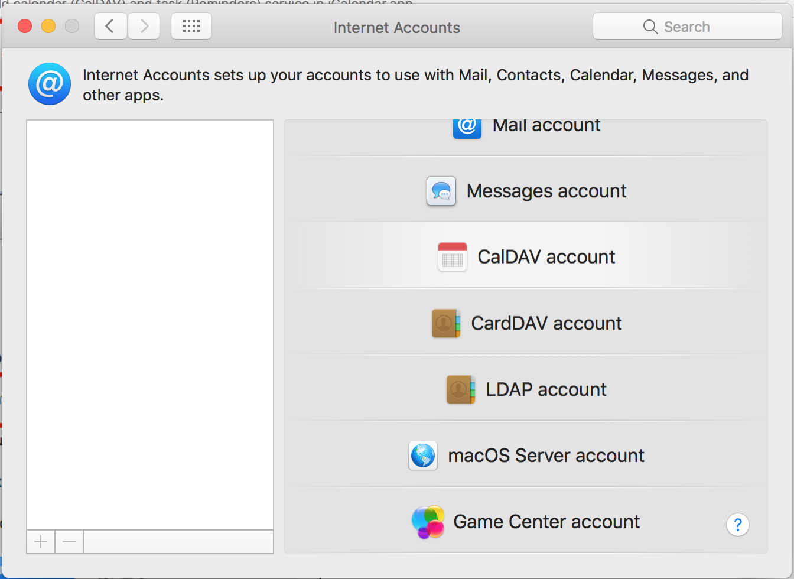
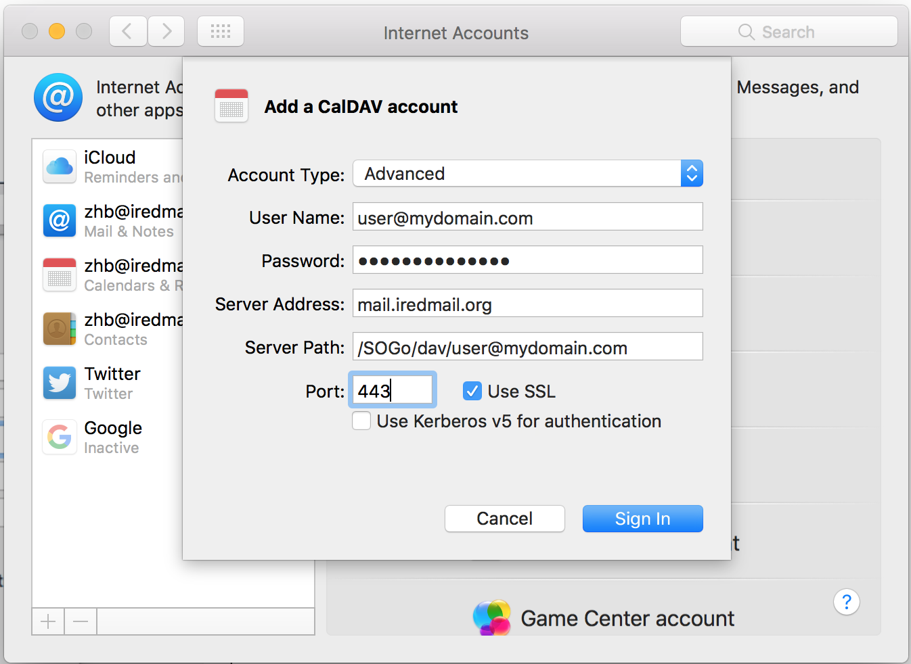
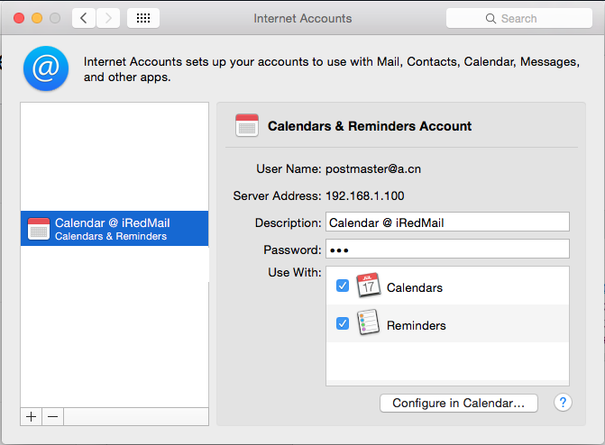

Mac OS X: Add calendar (CalDAV) and task (Reminders) service in iCalendar.app
Important Notes
- SOGo provides EAS (Exchange ActiveSync) support, but not EWS
(Exchange Web Service).
- Outlook 2013 for Windows works well with EAS.
- Below mobile devices works well with EAS, they will sync mails, calendars,
contacts, tasks, memos/notes.
- BlackBerry 10 devices
- iOS devices (iPad, iPhone). Tested with iOS 8.1.3.
- Android devices. Tested with OS v4.0.
- Apple Mail.app, and Outlook for Mac support EWS. But not EAS.
- Outlook 2010 for Windows supports MAPI.
- iRedMail doesn't integrate OpenChange and
Samba4 for native MAPI support, so SOGo groupware
in iRedMail doesn't provide full support for Microsoft Outlook clients,
Mac OS X Mail.app and all iOS devices, don't try to add your mail account
as an
Exchange account in these mail clients. You have to add separate
POP3/IMAP account, caldav/carddav account instead.
Requirements
- iRedMail-0.9.0 or later releases is required.
- To use calendar and task service, you must choose to install SOGo groupware
during iRedMail installation.
Step-by-step configuration
1: Open application System Preferences:

2: Click Internet Accounts:

3: on right panel, click Add Other Account at the bottom

4: choose Add a CalDAV account in popup window

5: Fill up the form with your server address and email account credential
- Account Type:
Advanced
- User Name:
your full email address
- Password:
password of your email account
- Server Address:
server name or IP address
- Server Path:
/SOGo/dav/[your full email address]
- Port:
443
- Use SSL: checked

6: Click Create button to create account. You can also enable Reminders (task
service) if you want.

That's all.